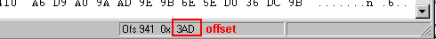
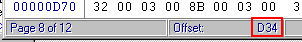
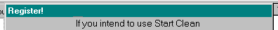
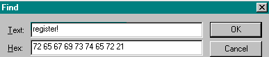
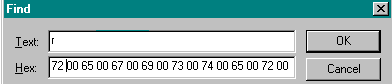
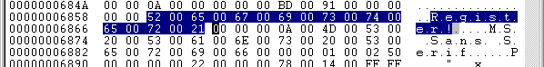
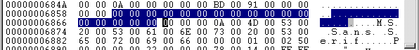
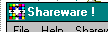
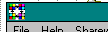

Cours de Crack
(4eme Partie)
Dans cette 4eme partie, nous allons effectuer simplement quelques precisions importantes.
Avant de lire tout ceci, il est preferable que vous ayez bien compris les cours precedents.
Comme les sujets abordés ne sont pas liés, j'ai preferé les presenter dans des paragraphes independants.
Qu'est-ce qu'un offset ?
Bonne question... L'offset, c'est l'adresse hexadecimale d'un byte...
C'est quoi un byte ?
Bon, ben un byte, c'est une valeur hexadecimale de 2 chiffre...
Pour etre plus concret, on a vu que JE =75 en hexa...Eh ben 75, c'est 1 byte ;)
Pourquoi a-t-on besoin de l'offset ?
Il se trouve que dans un programme, il y a plusieurs fois
le meme byte...vous avez ka rechercher 75 dans le code Hexadecimale de StartClean...Il y en a une bonne centaine !!
Pourtant, chacun de ces 75 n'a qu'une seule et unique adresse : l'offset !
Souvenez vous du dernier cours...on a fais une recherche sur 85C0742E8D84
alors qu'on voulais juste trouver le code 742E...Si on avait utiliser l'offset, on aurait pu aller directement
a l'endroit voulu, sans tapez des ribambelles de code hexa...
C'est cool, mais ou on le trouve cet offset ?
Regardez la petite capture :

Vous voyez ou c'est ?! Dans la barre d'état...
(NB: Agrandissez votre fenetre Wdasm si vous ne voyez pas de barre d'etat...)
Bon, maintenant il faut que je vous explique comment on se sert de l'offset :
Prenons une ligne en exemple... :

Vous pouvez voir que l'offset donner par WinDasm est 00002F65h
Le petit h a coté de l'offset, ca vous sert a rien, vous l'oubliez :)
Et tous les zeros avant le premier chiffre, vous pouvez les oublier aussi :)
On se retrouve donc avec un offset qui est 2F65
A quoi correspond cet offset ? Est-ce l'adresse hexa de 0F8478010000 ?
NON ! Je vous ai dit que l'offset est l'addresse hexadecimale d'un byte !
Mais alors c'est quoi cet offset ?
Eh ben, c'est l'adresse hexadecimale du premier byte
de l'instruction 0F8478010000...En terme clair, c'est l'adresse hexadecimale de 0F...
ET SEULEMENT DE 0F !
Donc 2F65 est l'offset de 0F
Ok! Mais alors, les autres byte de la ligne, c'est quoi leur adresse ?
C'est la qu'il faut apprendre a compter en Hexadecimal... :
En decimale, on compte de 0 a 9 (0 1 2 3 4 5 6 7 8 9), d'ou decimale : y'a dix chiffre...
En Hexa, on compte de 0 a F (0 1 2 3 4 5 6 7 8 9 A B C D E F), donc seize chiffres...
Maintenant, on va determiner les offsets de chaque byte de la ligne 0F8478010000 :
0F = 2F65 (ca, on l'a expliquer juste avant...)
84 = 2F66 (vous voyer la difference... ;)
78 = 2F67 (ben vi, on ajoute 1 a chaque fois..)
01 = 2F68
00 = 2F69
00 = 2F6A (OUBLIEZ PAS QU'ON COMPTE EN HEXADECIMALE...)
Voila, c'est pas bien compliquez non ? La seule difficulté, c'est de compter en hexa...
Tiens, un truc pour verifiez que vous vous etes pas trompé : regardez la ligne suivante :

Vous voyer l'offset ? c'est bien 2F6B, la suite logique de 2F6A !!
Bon, maintenant que vous savez ce qu'est un Offset, vous aller pouvoir vous en servir !
J'en fais quoi de cet offset ?
Dans l'editeur Hexadecimale, vous pouvez rentrez directement l'offset du byte a modifier...
Comme ca, ca vous evite de tapez plein de valeurs Hexadecimal...
Voici les menus concerné pour 2 editeurs :
HEdit : Edit =>> Go to...
Apres, tapez 0x avant l'offset... (0x2F65 par exemple)
WinHex : Position =>> Go To Offset...
Vous pouvez tapez directement l'offset (2F65 par exemple...)
Malheureusement, je ne peux pas vous faire une liste exhaustive, mais c'est a peu pres le
meme principe pour tous les editeur hexadecimal...
Et si je veux connaitre l'offset d'un byte depuis l'editeur Hexa, je fais comment ??
Bon, la encore je ne peux pas faire une liste complete, mais de facon general, l'offset apparait dans la barre
d'état de votre editeur hexadecimal...Voici l'exemple de Hedit(en haut) et de WinHex(en bas) :


Et cet "Offset", ca sert qu'a trouver un byte en hexa ?
Ben non ! Sinon, je vous aurais pas pris la tete avec !!
Donc, la principale utilité de rechercher l'offset, c'est de faire un crack grace a notre petit code :)
Et notre code sources, il est expliquer dans le 5eme cours !! Vala !
Peut-on annuler un saut conditionnel autrement que par plein de 90 ?
Si je pose la question, la reponse est forcement oui ! :))
Bon, alors comment on fait ?
Ben, vous savez qu'on peut annuler un nombre par son inverse ?
Par exemple, si on prend 34, on peut l'annuler avec -34
Facile, non ? Eh bien, pour un saut conditionnel, c'est le meme principe !
Ainsi, un JE est annulé par un JNE...
De meme, un JNE est annulé par un JE !
Comment ca se traduit en hexadecimal ?
C'est tres simple :)
Pour annuler un 74, on va mettre un 75 !
(RAPPEL: 74=JE et 75=JNE)
Pour annuler un 0F84xxxxxx, on va mettre un 0F85xxxxxx (RAPPEL: 0F84=JE et 0F85=JNE)
Reciproquement, pour annuler un 75, on va mettre un 74...
Et pour annuler un 0F85xxxxxx, on va mettre un 0F84xxxxxx !
Normalement, vous devriez comprendre sans probleme... ;)
Ok! Mais pourquoi "annuler" au lieu de "nopper" ?
L'utilité est de changer changer un minimum de byte...
Par exemple, au lieu de changer un 0F8480000000 en 909090909090, on peut ne changer que
le 85...ce qui donnera 0F8580000000 !
Ca fait quand meme plus propre, non ? Et pis surtout, vous verrez que quand vous allez
ecrire la source du crack, ca sera moins fastidieux : 1 ligne au lieu de 6 ;) Vala !
Y'a t-il encore d'autre maniere de "cracker" un programme ?
Bien sur que oui !! Je dirais meme que chaque crack est "different" d'un autre !
Et meme un programme peut etre cracker de plusieurs manieres... !
Il existe d'ailleurs d'autres manieres de cracker un StartClean...On en a vu 2, mais j'en compte
encore au moins 2 autres...(que l'on veras dans le prochain numero du zine, avec SoftIce)
Tout depend du raisonnement qu'on adopte...C'est pour ca qu'il est tres dur de faire un cours
qui permette rééllement d'apprendre a cracker...Nous, on fait notre possible, mais n'oubliez pas :
"C'est en forgeant qu'on devient Forgeron"
Comment faire sauter un nag-screen ?
oOo...on peut pas vraiment faire un cours universel la dessus, mais il y a quand meme une
methode qui peut marcher... : si le Nag-Screen contient du texte ou une barre de titre,
vous pouvez essayer de retrouver ces chaines de caracteres dans le code hexadecimal du programme de facon a l'effacer...
Bon, on va plutot faire un peu de pratique, ca sera plus simple...
Prenons une fois encore StartClean...Lorsque vous le lancez, le nag-screen apparait...
Relevez des lors le nom de la fenetre : "Register!"
.

NB: Si il n'y a pas de barre de titre, faite une recherche sur le texte contenu dans le nag...
Bon, maintenant, je vous explique brievement le principe :
Si on efface le nom de la fenetre dans le code hexadecimal, elle n'apparaitra plus au lancement
du programme...tout simplement...Donc plus de nag-screen...
Comment je retrouve le "Register!" en hexadecimal ??
Dans votre editeur hexadecimal, il suffit de faire une recherche sur ce mot !

Maintenant faites OK...le programme va vous renvoyer "Data not Found!" ou un truc comme ca.
Ben alors ?? Pourquoi ca marche pas ??
En fait, c'est du au fait que le programme est en 32bit....
Et alors? allez vous me dire...ben en 32 bit, vous devez separe chaque byte de lettre par un byte "00"...
Ohlala ! c'est quoi ca ?! Rassurez vous, vous allez comprendre en regardant l'écran suivant :

Vous comprenez toujours pas ?? Bon, regardez la premiere recherche...
On a fait une recherche
sur le mot "Register!", ce qui donne en 16bit :
52 65 67 69 73 74 65 72
Et bien en 32 bit, il faut ecrire ce meme code hexadecimal, mais entrelacé de "00", ce qui donnera :
52 00 65 00 67 00 69 00 73 00 74 00 65 00 72
NB: Certain programme, comme WinHex, peuvent faire la recherche de texte en 32bit,
simplement en activant l'option "Unicode"...Là encore, il faut faire selon l'éditeur Hexadecimal que vous utilisez...
Donc maintenant, en appuyant sur OK, vous allez tomber sur la phrase qui nous interesse :)
Et a l'avenir, comment je pourrais savoir qu'un programme est en 16bits ou en 32bits ??
Et bien c'est simple : en general, les programmes windows 9x sont tous en 32bits, sauf quelque uns...
Si c'est un programme Windows 3.x ou DOS, c'est forcement du 16bits...
Au pire des cas, si vous savez pas, ben vous essayer les deux methodes ! Compris ?...
Ok! Je fais quoi maintenant ??
Eh bien maintenant, il faut remplacer les valeurs hexadecimal des lettres par des zeros...
Si vous comprenez pas, regardez les deux ecran ci-dessous :


Normalement, vous devriez reussir a faire ca sans probleme...
Maintenant, lancer StartClean...La fenetre a bel et bien disparu :)
NB: Pour certains programmes, vous verrez toujours la fenetre, mais la barre de titre sera vide...
_______
Dans ce cas, il faut voir si il n'y aurait pas juste au dessus (dans le code hexa) une occurance du style "Shareware.Frm","Form.Shareware"
ou un truc qui y ressemble...(bien sur, j'ai mis "Form.Shareware" parceque c'est le cas de notre exemple, mais ca correspond en fait a ce
qu'il y a d'ecrit dans la barre de titre...vous pouvez aussi cherchez un truc du genre "Form.Nag" ou "Form.Splash" ou un autre truc qui vous parait suspect...)
Si vous trouvez, essayez de le supprimer (avec des "00") et voyer si ca fonctionne...
Si ca marche pas ou que vous ne trouvez pas, laissez tomber...
OK! ca marche, mais la fenetre principal du programme, pourquoi elle n'apparait plus ??
Ah...ca c'est le petit inconvenient de la technique...rappelez vous :
Quand on lance StartClean, il faut cliquez sur "OK" dans le Nag-screen avant de pouvoir acceder a la fenetre principal...
Mais nous, on a virer le nag, donc on peut plus appuyer sur "OK", donc le programme ne se lance plus...logique !
Alors quel interet de nous faire un cours sur un truc qui marche pas ?!
Du calme !! Qui a dit que ca ne marchait pas ? On a bien virer la fenetre non ?
En fait, ce qui nous gene, c'est juste qu'on peut pas appuyer sur le bouton "OK"...
D'ou la caracteristique suivante :
Cette technique n'est valable que si le Nag-Screen ne requiert aucune action pour activer le programme...
Donc dans le cas ou le nag-screen est "au dessus" du programme deja lancé, cette technique marche parfaitement... ;)
Par contre, n'abusez pas de cette methode car elle n'est pas tres "fine"...C'est meme plutot bourin...
Personnellement je ne l'utilise que dans les cas ou toutes mes autres tentatives ont echouées...
Pourquoi certains programmes n'ont pas de "Data String References" ?
Arff ! Avez vous deja programmé en VisualBasic ? Et bien dans ce language, tres pratique au demeurant,
toutes les fonctions de creations de fenetre, de comparaison de chaines de caracteres, etc... sont prise
en charge par les fameuse DLL qu'il nous manque tout le temps quand on recupere un programme sur Internet.
Vous savez, les VBRUN300.DLL et autres MSVBVM50.DLL...Et c'est pour ca que quand vous allez decompiler le programme
vous allez rien voir dans les "Data String References"...
Il y a aussi d'autre programme qui ne possede pas de Data String (bien qu'il ne soit pas programmer en VisualBasic).
Dans ce cas, essayez de voir si le code n'est pas contenu dans un fichier DLL annexe...
Sinon, considerez qu'il n'y a rien a faire (ca serait bien trop dur a expliquer a votre stade actuel).
Nous aborderons le sujet dans un prochain numero du zine...
Ceci dit, si vous etes confronter a un nag-screen, vous pouvez toujours essayer la technique decrite precedemment !
Avec un peu de chance, ca peut marcher :)
C'est quoi SoftIce ?
SoftIce est un "Débuggeur"...Il trace un programme pendant l'execution...
Cet utilitaire est tres pratique dans certains cas, mais comme il n'est pas si simple a utiliser,
nous aborderons son utilisation dans le prochain numero de notre e-zine... Patience...
Voila ! je crois que nous avons vu le plus important pour l'instant...
Maintenant, a vous de vous faire les dents sur des sharewares...
Commencez par des petites production, parceque sinon, vous risquez de desesperez rapidement !
En effet, les grand logiciels (ACDSee, Paint Shop Pro 5....) sont tres difficile a cracker pour un debutant.
En fait, je dirais meme que vous n'y parviendrez pas avant un bon bout de temps...
Mais tout arrive avec le temps ;) Donc patience... Et surtout bonne chance !
Mais avant de vous lancer dans l'aventure, passer par le dernier cour !
Vous y apprendrez comment faire vos propres crack a l'aide d'un code source qu'on vous fournit :)